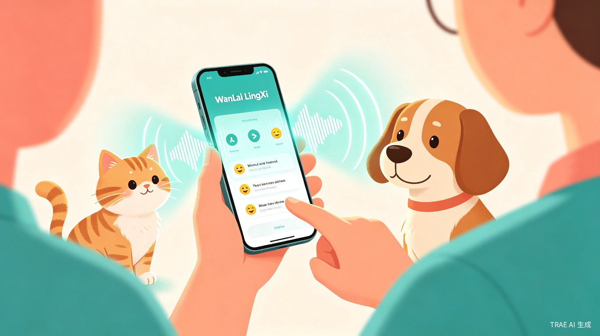
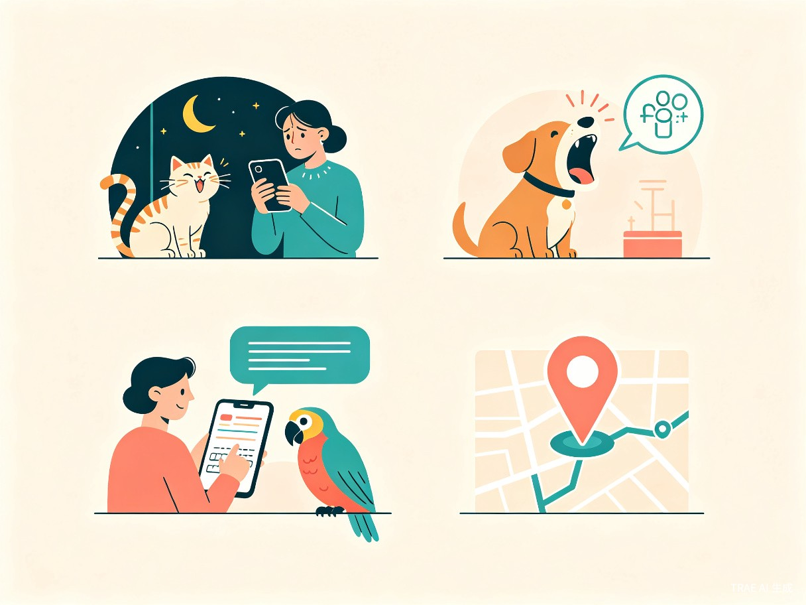
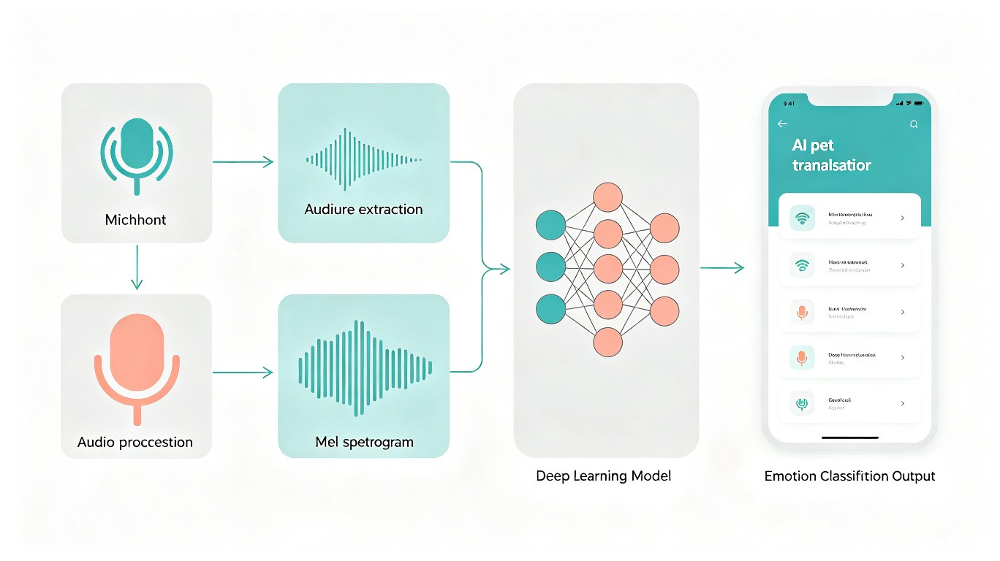

创意名称与介绍
全球有超过10亿只宠物与人类共同生活，但它们无法开口说话。主人只能凭经验猜测宠物的情绪和需求，往往错过宠物发出的健康预警信号。万籁·灵犀想做的事情很简单：用AI拆掉人与宠物之间的那道"语言墙"。
想解决什么问题
宠物无法用语言表达自己的感受。当一只猫在深夜反复嚎叫，或一只狗突然发出低沉的呜咽时，主人面对的是一个黑箱——它饿了？病了？害怕了？还是只是想玩？市面上现有的工具要么只能识别极少数简单情绪类别（如"开心/难过"），要么分析结果过于笼统，缺乏实用指导价值。主人与宠物之间始终存在一道信息不对称的鸿沟。
为什么会想到做这个
全球宠物护理市场规模在2025年已达2,734亿美元，宠物科技细分市场年复合增长率超过12%[1]。每一位铲屎官都有过"不知道它在叫什么"的焦虑时刻。与此同时，技术窗口已经打开——Earth Species Project在2024年末发布了面向生物声学的音频-语言基础模型NatureLM-audio，能够对从未见过的物种进行零样本分类[2]；学术界也在探索基于效价-唤醒度连续空间的宠物情绪建模方法[3]。但至今没有一款产品把这些前沿成果整合到商业可用的程度。
大概是什么产品
一款基于AI声学分析的宠物语言翻译跨平台小程序（同步支持iOS/Android App），集声音识别、情绪翻译、语音合成、GPS追踪于一体。用户打开手机录下宠物的叫声，AI在1-2秒内返回情绪解读和需求推测；同时支持"人宠对话"——主人输入文字，系统生成对应情绪的宠物回应声音；配合可选的智能项圈硬件，实现全天候声音监测与实时GPS定位。

目标用户及痛点
面向哪些用户
核心用户为18-45岁的养宠家庭用户，覆盖猫、狗、鹦鹉等常见宠物。延伸用户包括有健康管理需求的高端养殖户、鸟类爱好者，以及宠物医院和宠物店等专业场景。
在什么场景下使用
异常叫声解读
宠物突然发出不同于往常的叫声，主人想快速了解它可能在表达什么——饥饿、疼痛、恐惧还是求关注。
健康预警捕捉
宠物生病前期往往伴随声音变化（如呼吸声异常、叫声频率改变），系统通过持续监测提前发现异常信号。
人宠双向对话
主人输入文字，系统生成对应情绪和语境的宠物回应声音，满足"和宠物说话"的情感需求。
走失实时追踪
配合智能项圈硬件，宠物外出时提供实时GPS定位、电子围栏越界报警和运动轨迹回放。
当前痛点
没有一体化的解决方案，主人只能靠经验猜测，容易忽略痛苦和疾病的早期信号。市面现有产品存在五个结构性缺陷：
| 痛点维度 | 现状 | 万籁·灵犀的应对 |
|---|---|---|
| 识别种类少 | MeowTalk仅支持猫，Traini仅支持狗，尚无产品同时覆盖猫+狗+鸟类 | 首批支持猫、狗、鹦鹉，后续扩展至兔、仓鼠等 |
| 结果笼统 | 仅输出"开心/难过"等6-14种固定类别，无法区分细微意图差异 | 采用VA连续情绪空间建模，提供细腻的情绪坐标和语义解读 |
| 单向翻译 | 除PettiChat外，主流产品均为单向（宠物→人），无法双向互动 | 支持人→宠物的文字转声音，生成个性化宠物回应 |
| 缺乏健康价值 | 所有产品定位为"娱乐工具"，无健康预警功能 | 声音变化趋势分析，自动标记异常并推送健康预警 |
| 功能割裂 | 声音翻译、GPS追踪、健康管理分散在不同App中 | 翻译+追踪+健康一体化，一个入口解决所有需求 |
竞品分析与差异化
宠物声音翻译赛道已有数个玩家入场，但各有明显短板。以下是目前市场的主要竞品对比：
| 产品 | 物种 | 双向翻译 | 健康预警 | GPS追踪 | 技术路线 | 价格 |
|---|---|---|---|---|---|---|
| MeowTalk | 仅猫 | 无 | 无 | 无 | AI声纹分类器 | $2.99/月 |
| Traini | 仅狗 | 有（PetGPT） | 弱 | 有（硬件） | 多模态AI（PEBI系统） | 订阅制 |
| PettiChat | 猫+狗 | 有 | 无 | 有（硬件） | Pet-LLM多模态 | 一次性$120 |
| 万籁·灵犀 | 猫+狗+鹦鹉 | 有 | 有 | 有（硬件可选） | VA连续情绪+多模态+个性化 | 分层订阅 |
技术方案
万籁·灵犀的技术架构分为四个层次，从音频采集到最终的情绪解读和语音合成，形成完整的处理链路。

音频预处理层
从环境噪声中分离宠物叫声，采用基于深度学习的语音活动检测（VAD）和自适应降噪算法，确保在各种家庭环境（电视声、 traffic噪音、其他宠物干扰）下都能准确捕捉目标宠物的声音。
特征提取层
将音频信号转换为多维可计算特征，包括Mel频谱图、梅尔频率倒谱系数（MFCC）、线性频率倒谱系数（LFCC）、短时傅里叶变换（STFT）、RMS能量、频谱质心和过零率等。这些特征构成后续模型判断的基础输入。
核心模型层
采用效价-唤醒度（VA）连续情绪空间建模替代传统的固定类别分类[3]。模型基于Audio Transformer架构（6层、512维、8头注意力），联合训练VA回归、情绪分类、体型/性别分类三个任务。相比MeowTalk的11种固定意图，VA空间能提供更细腻的情绪坐标，例如区分"轻微不满"和"强烈焦虑"之间的渐变状态。
个性化适配层
每只宠物的叫声都有个体差异（品种、年龄、性格、体型），通用模型难以精准适配。万籁·灵犀引入个体声纹档案机制——用户持续使用后，系统会基于该宠物的历史录音建立个性化模型，翻译准确率随使用时长逐步提升。
语音合成层
人→宠物方向的"翻译"采用基于个体声纹的语音合成技术。系统从用户宠物的历史录音中提取声纹特征，结合目标情绪标签，生成听起来自然且符合该宠物"口音"的回应声音，而非通用的电子音效。
价值与意义
商业价值
采用分层订阅变现模式，叠加多元收入渠道，构建可持续的商业闭环：
基础版 ¥9.9/月
声音识别+情绪翻译+基础健康监测，覆盖日常使用场景
全通卡 ¥69.9/月
解锁全部物种、双向对话、个性化适配、深度健康分析
专属AI训练服务
付费为特定宠物进行深度声纹训练，提升个体识别准确率
智能项圈硬件
配合GPS追踪和全天候声音监测的智能硬件，一次性购买
社会价值
宠物健康问题的早期发现至关重要。许多宠物在表现出明显症状之前，声音特征就已经发生了微妙变化——呼吸频率、叫声音调、发声时长等指标的偏移，往往是疼痛、呼吸道感染、心血管问题的前兆。万籁·灵犀通过持续的声音监测和趋势分析，帮助主人更早捕捉这些健康预警信号，减少因"没看出来"而延误就医的情况。
从更宏观的角度看，这款产品真正想提升的是人与动物之间的理解与陪伴质量。当每一声呼唤都能被"听见"和"理解"，人与宠物之间的情感连接将变得更加紧密和有温度。
市场前景
宠物科技市场正处于高速增长期。据Global Market Insights数据，2025年全球宠物科技市场规模约156亿美元，预计到2035年将增长至529亿美元，年复合增长率12%[4]。而宠物声音翻译作为宠物科技中的新兴细分赛道，目前参与者极少，市场教育已由MeowTalk（2000万+下载）和PettiChat（Kickstarter超募770%）初步完成，正处于从"尝鲜"向"刚需"转化的关键窗口期。
实现路径
产品开发分为三个阶段，从MVP验证到规模化扩展：
| 阶段 | 时间 | 核心目标 | 关键交付 |
|---|---|---|---|
| MVP验证 | 第1-3个月 | 验证核心翻译能力的可行性 | 猫+狗声音识别、基础情绪分类、小程序Demo |
| 产品打磨 | 第4-6个月 | 提升准确率，扩展功能 | VA连续情绪建模、个性化适配、人宠对话、鹦鹉支持 |
| 规模扩展 | 第7-12个月 | 商业化运营与生态建设 | 智能项圈硬件、健康预警系统、API开放平台、多物种扩展 |